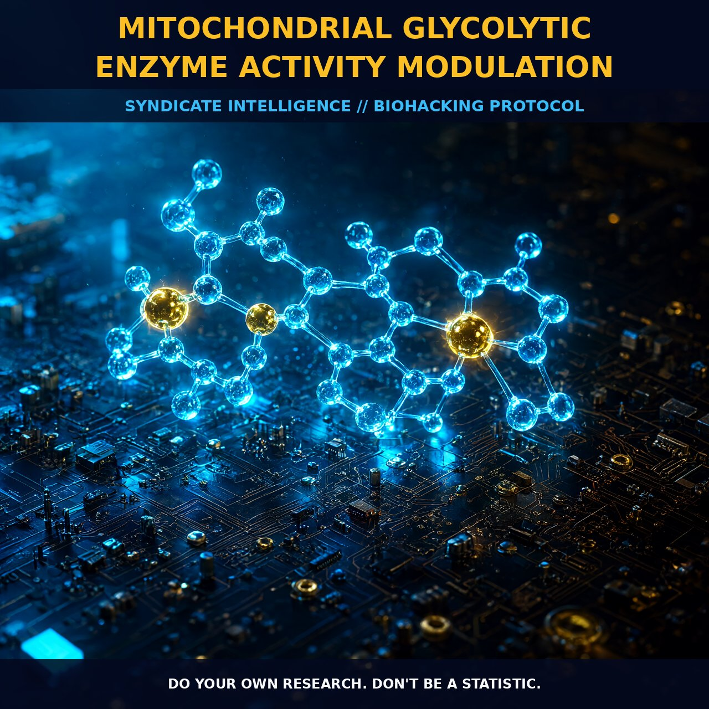

Mitochondrial Glycolytic Enzyme Modulation and Cytoskeletal Integration

1. The Bio-Mechanics of Energy Transduction
The modulation of mitochondrial glycolytic enzyme activity is anchored in the sophisticated interplay between the mitochondrial reticulum and the cytoskeletal architecture within the myocyte. Central to this process are enzymes such as hexokinase, which interact directly with voltage-dependent anion channels (VDAC) on the mitochondrial outer membrane. This precise molecular docking regulates membrane permeability, guiding ATP generated via oxidative phosphorylation straight to active glycolytic sites.
This localized energy transfer occurs within a larger supercomplex known as the mitochondrial interactosome. Comprising proteins like octameric mitochondrial creatine kinase (MtCK), this network acts as a membrane-binding regulator, ensuring that energy transduction is not merely chemical but mechanically supported by the cell's structural integrity.
2. Cytoskeletal Sensing and Metabolic Efficiency
The structural health of the myocyte is a pivotal determinant of metabolic efficiency. Proteins such as Four-and-a-Half Lim 2 (FHL2) serve as critical mechanosensors; they bind to titin and dock key metabolic enzymes, including M-CK, adenylate kinase, and phosphofructokinase.
This docking mechanism creates a conductive network that minimizes metabolite diffusion distances. By physically linking the cytoskeleton to the machinery of energy production, the cell ensures that the switch between oxidative phosphorylation and glycolysis remains highly responsive to cellular strain, supporting rapid energy distribution across large cellular regions.
3. Biological Leverage: Countering Pathological Shifts
The primary leverage point for this modulation is the optimization of ATP production under conditions where mitochondrial efficiency is typically compromised by hypoxia or inflammation. When mitochondrial dysfunction arises—often driven by reactive oxygen species (ROS) damaging mtDNA or increased intracellular ammonium inhibiting the Krebs cycle—cells may revert to a Warburg-like state.
In this state, glycolysis becomes the dominant pathway, producing two ATP molecules per glucose unit. By reinforcing the interaction between cytoskeletal proteins and mitochondria, we prevent this pathological shift toward excessive glycolytic reliance, even when oxygen is abundant. This serves as a critical buffer against chronic mitochondrial dysfunction associated with aging, toxic metal exposure, and hyperinsulinemia.
4. Tactical Implementation and Protocol
To optimize the mitochondrial interactosome, creatine supplementation stands out as a foundational intervention. It provides the necessary substrate for MtCK to facilitate phosphotransfer between metabolic microcompartments, effectively shuttling energy where it is needed most within the dense myofibrillar network.
Furthermore, consider compounds that support the Pdk-Pdc axis to ameliorate mitochondrial damage and improve glucose oxidation rates. By maintaining a healthy pool of functional mitochondria through consistent nutrient delivery and reduced inflammatory load, we ensure that high-energy demanding cells can maintain polymerization processes without succumbing to metabolic fatigue.
5. Prostar Life Hack
The Structural Energy Shuttle: Do not view creatine merely as a muscle buffer, but as a metabolic bridge. Supplement to fuel the MtCK enzyme within the mitochondrial interactosome. This physically connects your energy production sites to your usage sites, minimizing diffusion loss and preventing the premature shift to glycolysis during high-intensity cognitive or physical strain.
Prostar Life Hack
The Structural Energy Shuttle
Do not view creatine merely as a muscle buffer, but as a metabolic bridge. Supplement to fuel the MtCK enzyme within the mitochondrial interactosome. This physically connects your energy production sites to your usage sites, minimizing diffusion loss and preventing the premature shift to glycolysis during high-intensity cognitive or physical strain.
[ AUTHOR: LEAD TECHNICAL RESEARCHER ]